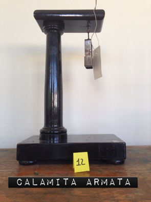

Sostegno per magnete
Scuola di provenienza: Liceo Classico "P. Colletta", Avellino
Settore: Magnetismo
Costruttori: : Giovanni Bandieri, Napoli, Italia
Materiali: Legno, ottone e magnete
Accessori: Magnete
Stato di conservazione: Buono
Descrizione: Supporto in legno per calamita